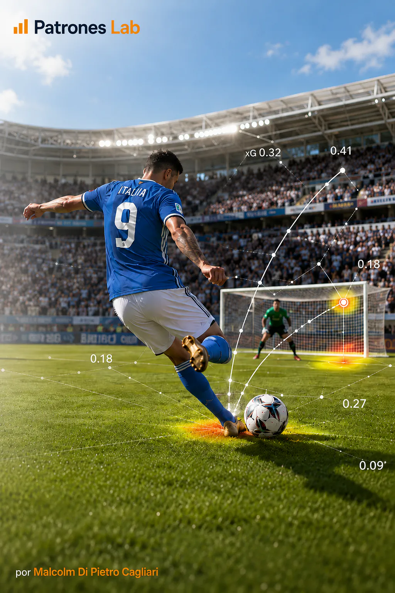

التحليلات الرياضية · المشروع 21

المشروع 06 · تحليلات كرة القدم
نموذج تعلم آلي · الأهداف المتوقعة (xG)
تحليل تسديدات من بطولات كرة القدم للرجال ببيانات StatsBomb العامة. يقدّر نموذج تعلم آلي احتمال تسجيل كل تسديدة من موقعها وخصائصها. وتتيح التقديرات قياس جودة التسديدة بصرف النظر عن نتيجتها وفهم توزيع الفرص حسب المباراة والفريق واللاعب.
السياق والهدف
قد تنتهي تسديدتان من موقعين متشابهين بنتيجتين مختلفتين. يقيس مؤشر الأهداف المتوقعة (xG)، واسمه بالإنجليزية expected goals، جودة الفرصة من خلال تقدير احتمال تسجيل هدف. تحصل كل تسديدة على قيمة بين 0 و1 استنادًا إلى تسديدات مشابهة.
يستخدم المشروع بيانات التسديدات من StatsBomb لعدد من بطولات كرة القدم للرجال، وتبدأ المواسم المتاحة من عام 2015. ومن بين البطولات التي شملها التحليل ما يلي:
- كأسا العالم: روسيا 2018 وقطر 2022.
- بطولات المنتخبات: كوبا أمريكا 2024 وكأس أوروبا 2020 و2024 وكأس أمم أفريقيا 2023.
- الدوريات الأوروبية: الدوري الإسباني، والدوري الإنجليزي الممتاز، والدوري الإيطالي (سيري آ)، والدوري الألماني (بوندسليغا)، ودوري الدرجة الأولى الفرنسي (ليغ 1).
- بطولات أخرى: دوري أبطال أوروبا والدوري الأمريكي لكرة القدم والدوري الهندي الممتاز.
شمل التحليل 63,482 تسديدة أثناء اللعب والوقت الإضافي، مع موقعها ونوعها وعضو الجسم المستخدم وسياق التحرك.
الهدف بناء تقدير مستقل للأهداف المتوقعة وتقييمه على مباريات خارج التدريب ومقارنته باحتمالات StatsBomb. وحُجزت مباريات قطر 2022 التي شاركت فيها الأرجنتين وفرنسا وكرواتيا والمغرب لتطبيق النموذج على عينة مستقلة.
النموذج والتحقق
إعداد بيانات التسديدات
يبدأ التحليل بالتسديدات ويحدد أيها انتهى بهدف. ويشمل الوقت الأصلي والإضافي وركلات الجزاء المنفذة أثناء المباراة. ويُحسب من موقع التسديد البعد عن منتصف المرمى وزاوية الرؤية بين القائمين.
المسافة من منتصف المرمى
d=\sqrt{(120-x)^2+(40-y)^2}
يحدّد x وy موقع التسديدة في نظام إحداثيات StatsBomb. وتمثّل النقطة (120، 40) منتصف مرمى الخصم. وتبيّن المسافة مدى بُعد موضع التسديد عن المرمى.
من أبرز المتغيرات المعدّة للنموذج:
- المسافة إلى المرمى وزاوية التسديد.
- القدم المستخدمة والتقنية ونوع اللعب.
- الضغط الدفاعي ومركز اللاعب.
حُوّلت المتغيرات إلى قيم رقمية، وكانت المسافة إلى المرمى الأكثر إسهامًا.
الانحدار اللوجستي وتقدير الأهداف المتوقعة
يجمع الانحدار اللوجستي خصائص كل تسديدة لتقدير احتمال أن تنتهي بهدف. ويتعلم النموذج أثر المتغيرات من تسديدات معروفة النتيجة، ثم يحوّل محصّلتها إلى قيمة بين 0 و1 باستخدام الدالة السيغمويدية. يستخدم النموذج النهائي 12 متغيرًا لكل تقدير.
احتمال التسجيل المقدّر
xG_i=\frac{1}{1+e^{-z_i}},\quad z_i=\beta_0+\sum_{j=1}^{12}\beta_jx_{ij}
يمثّل xG(i) احتمال تسجيل هدف من التسديدة i بحسب النموذج. ويعبّر كل معامل بيتا عن الوزن المقدّر لأحد المتغيرات، ثم تحوّل الدالة السيغمويدية مزيج هذه المتغيرات إلى احتمال.
تُفصل المباريات كاملة للتقييم، فتبقى تسديدات المباراة الواحدة معًا في التدريب أو الاختبار. ويُستخدم نحو 75% من تسديدات عينة التطوير للتدريب و25% المتبقية لتقييم التوقعات.
التحقق والمقارنة مع StatsBomb
يقيس التقييم قدرة النموذج على منح التسديدات المسجلة قيمًا أعلى وقرب الاحتمالات من النتائج المرصودة. في الاختبار سُجّل 1,688 هدفًا مقابل مجموع متوقع 1,674 هدفًا، أي إن القيمتين متقاربتان إجمالًا.
الأهداف المتوقعة التراكمية
xG_{\text{المجموع}}=\sum_{i=1}^{n}xG_i
يعبّر مجموع xG لتسديدات لاعب أو فريق أو مباراة عن مجموع الأهداف المتوقعة من تلك الفرص. وهو توقع إحصائي قد يختلف عن الأهداف المسجلة فعليًا.
في مباريات قطر 2022 المحجوزة للاختبار كان نموذج المشروع أقرب إلى إجمالي الأهداف الفعلية. وتفوق StatsBomb في ترتيب التسديدات لاحتمال التسجيل وتقليل خطأ التقديرات. وتفصل المقارنة بين دقة المجموع ودقة تقدير كل تسديدة.
التسليم والدروس المستفادة
يعرض المشروع احتمالات كل تسديدة والمتغيرات الأكثر تأثيرًا والمقارنة مع StatsBomb. وتوضح الرسوم مواقع التسديدات على الملعب وتطور الأهداف المتوقعة خلال المباراة.
استُخدم النموذج في نهائي قطر 2022 لدراسة جودة فرص الأرجنتين وفرنسا. سجّلت الأرجنتين 2.81 xG من 20 تسديدة وفرنسا 1.87 من 10 تسديدات. وأحرز كل منتخب ثلاثة أهداف، ما يتيح مقارنة الخطورة المصنوعة بالأهداف الفعلية.
يقارن مؤشر زخم xG الفارق بين الفرص التي صنعتها الأرجنتين وفرنسا في فترات من ثلاث دقائق. ويبيّن أيهما كان أخطر في كل فترة وكيف تغيّر الفارق أثناء اللقاء.
يربط النموذج جودة الفرص بتطورها خلال المباراة، فتُقرأ النتيجة النهائية في ضوء الفترات الأكثر خطورة لكل منتخب.